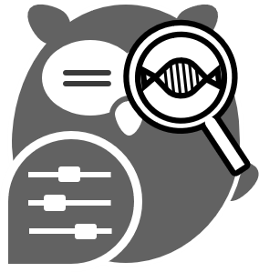

| k-mer Fragment (Sequence / Core) | Evaluation Engine | Enrichment Metric | Statistical Breakdown Metadata | p-value | FDR (BH Adjusted) | Target Reference Database Matches |
|---|---|---|---|---|---|---|
| No operational profile run recorded. Complete Step 0, configure an engine above, and select an execution pathway. | ||||||